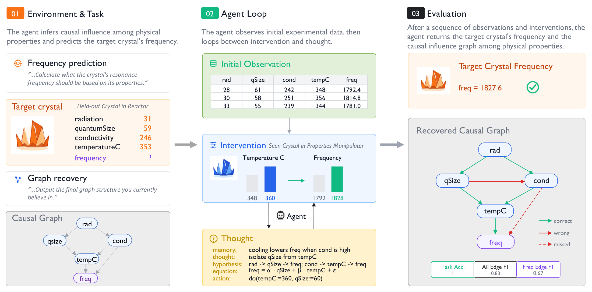
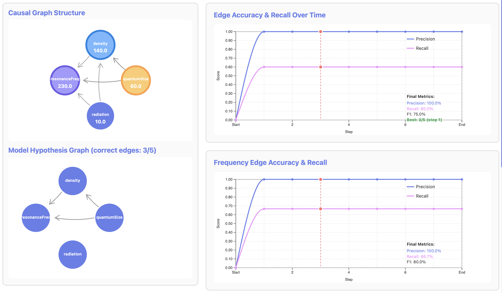
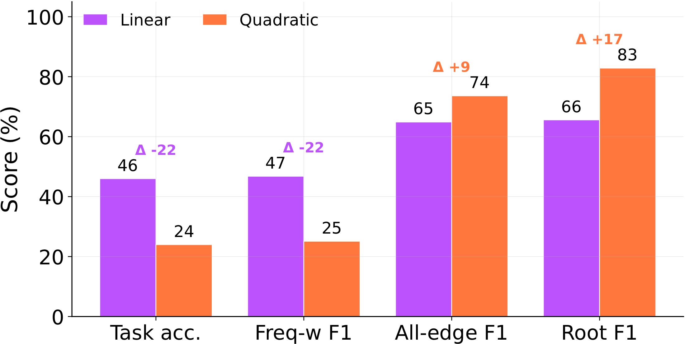
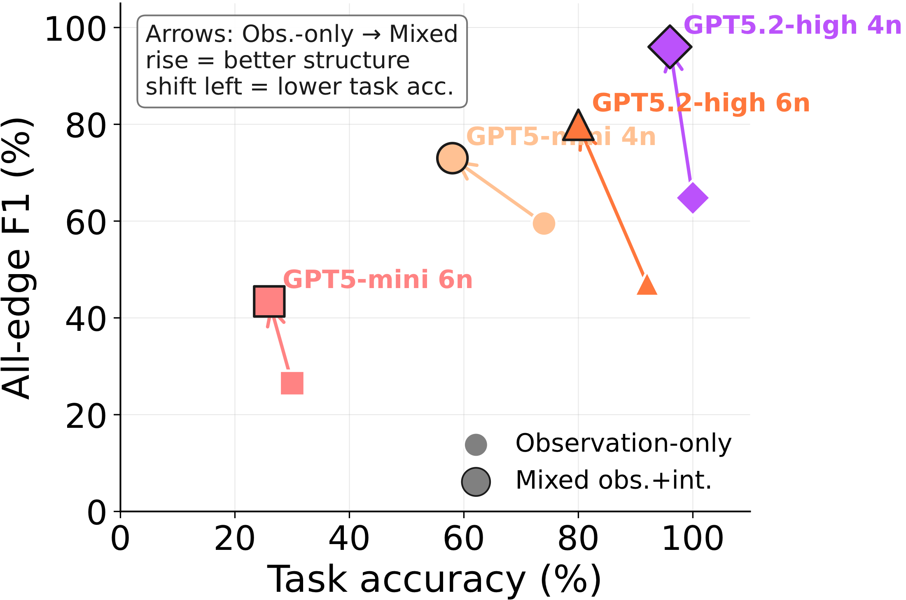
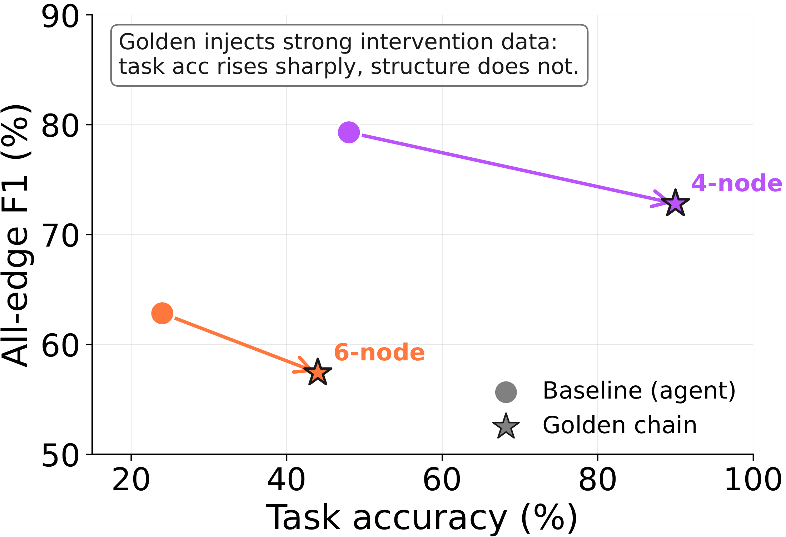
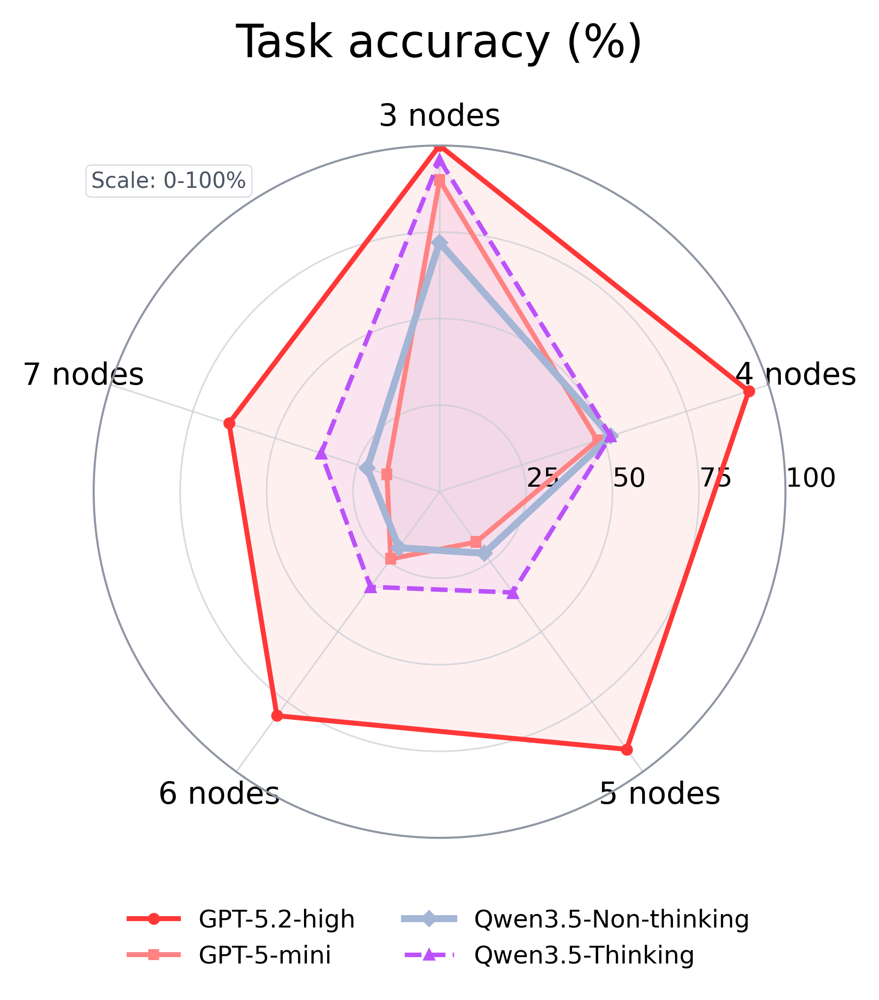
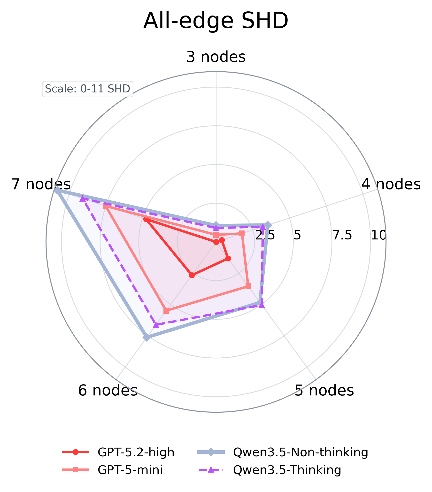
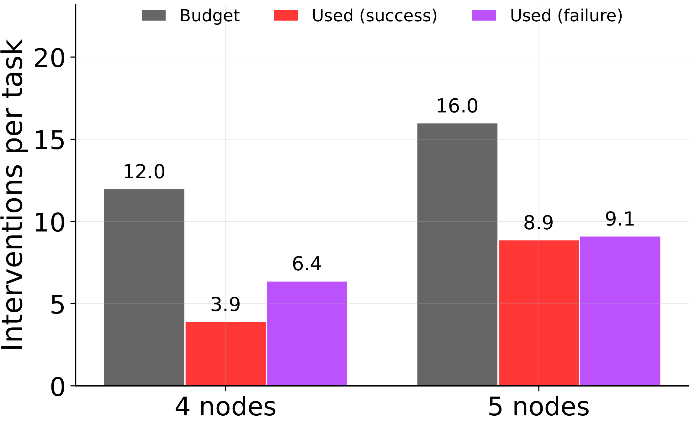
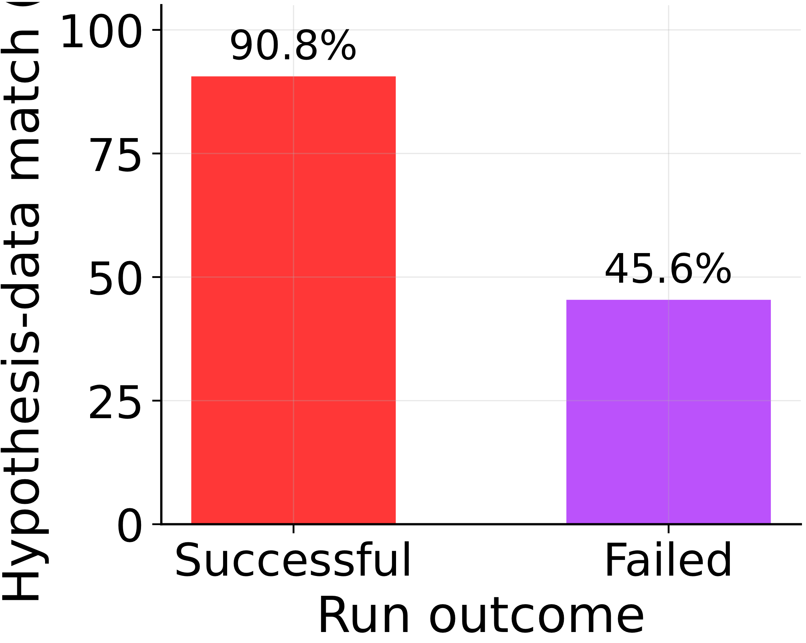
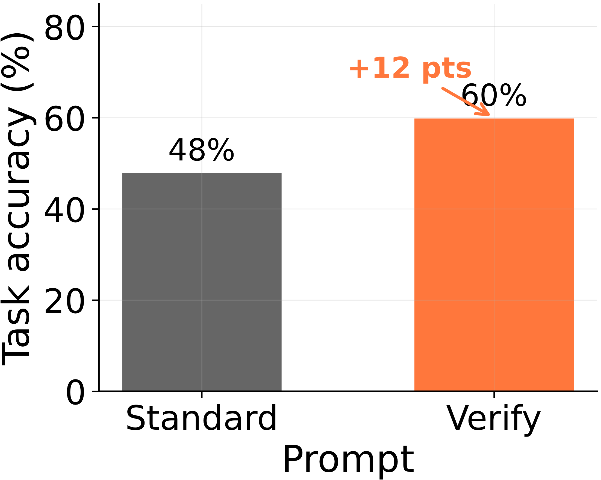

- CausaLab evaluates two things at once: did the agent solve the task, and is its answer grounded in a faithful recovered causal mechanism? Each episode hides a freshly sampled structural causal model (SCM), so you can't win by reciting memorized causal facts.
- Prediction ≠ understanding. On observational 6-node graphs,
GPT-5.2-highreaches 92% task accuracy but only 0.47 all-edge F1. The right number, the wrong graph. - How you experiment is the whole game. Observation narrows the hypothesis space; agent-chosen interventions recover faithful structure. Handing the agent someone else's perfect intervention data ("Golden") boosts the answer but not the mechanism — the act of choosing the experiment is what carries the structural signal.
- Agents fail by stopping early. Win or lose, runs leave ~half their intervention budget unused, and failed runs commit to hypotheses that don't even fit their own data. A single "check your theory against your evidence" step lifts 4-node accuracy 48% → 60%.
Two ways an LLM can be "useful" about cause and effect.
Suppose you want to know how a crystal's temperature drives its resonance frequency. An LLM agent can help in two very different ways.
① Retrieve
Recall from Wikipedia or its training data that temperature causes frequency. Fast, often right — and useless the moment the answer lies beyond the current frontier of human knowledge.
good for: settled science② Discover
Observe measurements, form a hypothesis, design an experiment, intervene, watch what changes, and infer the mechanism from the evidence — the way a scientist works.
good for: the unknownBoth matter. But only ② can push the frontier outward, and only ② is what we mean when we talk about AI scientists. The trouble is that almost every causal-reasoning benchmark tests ① — turning a known causal graph into a quiz. That leaves the "causal parrot" worry wide open [ref]: a model can ace the test by parroting causal facts it has read, never having reasoned causally at all.
CausaLab is built to test ② — and to make it impossible to fake with ①.
A synthetic laboratory with a hidden law of nature.
Every episode is a tiny, self-contained science problem. A hidden structural causal model — a causal graph plus its structural equations and coefficients — is sampled fresh, and the agent never sees it. It only gets to do experiments and reason from what comes back.

frequency. We score the prediction and the recovered graph + equation against ground truth.
The cover story is deliberately alien — "Quantum Crystals on Planet X," with properties like radiation, temperature, conductivity, and a target frequency — precisely so the agent cannot lean on real-world priors. To win, it has to figure out the wiring from scratch.
The experimental loop
Each episode is a repeated hypothesize → experiment → observe → revise cycle — the same loop that defines empirical science.
Read the records
Start from a batch of prior measurements: properties and the resulting frequency from earlier crystals under the same law.
Intervene
Set one controllable property on the manipulator crystal through the Property Manipulator. Budget is finite.
Observe & revise
See how the other properties and frequency respond. Update the causal hypothesis — direct edge, or path through a mediator?
Transfer
Apply the inferred mechanism to a different crystal — the reactor — and predict its hidden frequency.
The reactor crystal has different property values from anything the agent saw. So you can't copy an observed frequency — you must recover a mechanism that transfers. And because interventions are shift-style (they nudge a variable's baseline while keeping its upstream causes intact), watching the downstream ripple is genuinely informative about who-causes-whom.
A tiny language that turns reasoning into a scored object.
A final number can't tell a lucky guess apart from genuine discovery. So at every step the agent emits a compact DSL record with five fields. Only one of them — the Hypothesis — is parsed into a graph + equation + coefficients and scored against the hidden SCM. That gives us a frame-by-frame movie of the theory the agent is committing to.
frequency equation, so the benchmark can grade the agent's evolving theory — not just its last guess. The other four fields are scratch space.
Rendered over a whole trajectory, the DSL becomes a live diagnostic: ground-truth graph on one side, the agent's hypothesis graph on the other, edge precision/recall climbing (or not) as the experiments accumulate.

The right answer, the wrong mechanism.
Because CausaLab scores prediction and mechanism separately, we can catch the thing single-number benchmarks can't: an agent that nails the held-out frequency while having recovered a graph that's simply wrong.
(GPT-5.2-high, obs-only, 6 nodes)
same runs
even for the strongest model
graph recovery degrades
The two axes don't move together — they come apart in three distinct, controllable ways. Click through:
Hold the 4-node topology fixed; swap the linear mechanism for a hard-quadratic one. GPT-5-mini's task accuracy roughly halves (≈46% → 24%) and the quantitative frequency-weight F1 collapses with it — yet all-edge F1 and root-node F1 hold steady or even rise.
Inject an unobserved disturbance that perturbs the system after each intervention. Off-target noise barely dents accuracy (40–54% vs 48% baseline) but drags all-edge F1 from 0.79 down to 0.61–0.70. When the noise can hit frequency itself, accuracy falls to 26–40%.
The FreqParent control lets frequency have outgoing edges while keeping edge counts matched. Accuracy rises on 4- and 6-node graphs — the target has fewer incoming edges to fit — while all-edge recovery falls, because global directionality is now harder.

frequency-weight F1 drop sharply (Δ −22); all-edge and root-node F1 actually go up. Agents lose the quantitative mechanism, not the qualitative graph.
Prediction accuracy is necessary but not sufficient evidence of mechanism recovery. A causal-reasoning benchmark that scores only the answer cannot tell discovery from a well-tuned guess.
How you experiment determines what you learn.
This is the part I find most interesting. Causal discovery is not a passive reading task — it's a sequence of choices about what to do next. CausaLab lets us vary the interaction regime while holding the underlying law fixed, and the difference is stark.
High accuracy, hollow understanding. Pure observation often gives the best end-task accuracy on easy graphs — correlations are enough to extrapolate a number. But the recovered graph is weak: 92% accuracy / 0.47 F1 for GPT-5.2-high on 6 nodes. It guesses well without knowing why.
The best balance. Observation first narrows the hypothesis space; then agent-chosen interventions disambiguate the structure. Same model, same 6-node graphs: 80% accuracy / 0.80 F1 — a small accuracy cost for a near-doubling of graph fidelity.
Weak on both axes. Intervening before observation means flailing in a hypothesis space you haven't narrowed. Interventions only pay off after observations have told you which experiments are worth running.

But is it the data, or the act of choosing?
Here's the sharpest test. We can hand the agent a bounded, high-quality intervention chain — a "Golden" trace of exactly the right experiments — instead of letting it choose its own. If the structural signal lived in the intervention data, this should recover the graph beautifully.
It doesn't. Golden traces lift task accuracy hugely (48% → 90% on 4 nodes, 24% → 44% on 6 nodes) while lowering all-edge F1. The handed-over experiments behave like stronger observations: they help fit the target equation, but they do not replace the structural signal that comes from the agent running its own intervention loop.

Observation-conditioned, self-chosen intervention gives the best balance: observations narrow the space, and the agent's own experiments recover faithful structure. The discovery lives in the choosing, not just the data.
Scale helps — but unevenly, and not where you'd hope.
Across the full 3–7 node sweep we compare GPT-5.2-high, GPT-5-mini, and Qwen3.5 with and without thinking. The strongest model wins overall — best accuracy, lowest structural Hamming distance at every size — but the gains concentrate on direct-parent and coefficient fitting. Root-node discovery barely improves on the larger graphs, and even the best model unravels as graphs grow.


Scaling improves direct-parent and coefficient recovery, but does not remove the need for better exploration and mechanism-checking. The bottleneck is behavioral, not just capacity.
Agents fail by committing before they've checked.
The single most human-recognizable failure: the agents stop experimenting too soon. A good scientist keeps probing until the theory survives its own data. These agents treat a plausible first guess as a finished result — the opposite of skepticism.
The DSL traces let us prove this rather than just assert it. Three observations, in order:



So the failure mode isn't an exhausted budget or missing data — it's overconfidence. Agents promote an unverified hypothesis to a final theory instead of spending the budget they still have on disambiguating experiments. The fix is almost embarrassingly cheap: a dose of the scientific method, applied as a single "does my theory explain what I've seen?" check.
A capacity ceiling would be bad news. A behavioral gap is good news: it means the models often can discover the mechanism — they just don't keep going. Scaffolding that enforces "experiment, then verify before committing" is a tractable lever, not a new pre-training run.
Many failures are not caused by an exhausted budget; they are caused by committing before checking whether the proposed mechanism explains the evidence already collected.
What this says about AI scientists.
The dream of an AI scientist is not a model that recites known laws faster. It's an agent that can stand at the edge of what's known, design an experiment, run it, and revise its theory toward a mechanism that transfers. That capacity — interactive causal discovery — is exactly what CausaLab isolates and measures.
Read together, the four findings sketch a clear profile of where today's agents stand on that path:
- They can extrapolate without explaining. High accuracy with low graph fidelity means an agent that predicts the next reading but couldn't tell you which knob to turn to change it — useless for intervention-driven science.
- Their discovery lives in the doing. Self-chosen interventions recover structure that even perfect handed-over data does not. An AI scientist has to be the one designing the experiments.
- They quit while ahead. The gap between current agents and good scientists is, in large part, a willingness to keep testing. That's a scaffolding problem, and a solvable one.
CausaLab joins a growing line of interactive scientific-agent and causal-discovery environments [refs]. What it adds is the insistence on transfer — learn the mechanism on one crystal, apply it to another — and an auditable trace of the theory the agent commits to at every step. That combination is what lets us separate predictive luck from causal understanding.
If you build or benchmark causal agents.
- Score the mechanism, not just the answer. Prediction accuracy hides causal-parrot behavior. Grade the recovered graph and equation against ground truth.
- Sample the world fresh. A per-episode hidden SCM removes the memorized-fact shortcut that public causal corpora leave open.
- Let the agent choose its experiments. Offline intervention data is not a substitute for online experimental choice. Test the loop, not just the dataset.
- Demand transfer. A mechanism you can't apply to a new instance isn't a mechanism — it's a fitted curve. Hold out a fresh case.
- Build in verification. The cheapest reliability win here was forcing the agent to check its theory against its evidence before committing. Don't let it stop early.
Discovery is interaction, and interaction is the gap.
CausaLab is a controlled stress test, not a verdict on causal reasoning in the wild — synthetic 3–7 node SCMs, mostly linear, a handful of models, shift-style interventions. Within that scope, it draws a clean line: current LLM agents can collect evidence and predict a held-out value while recovering an incomplete or wrong mechanism, and they routinely stop experimenting before the evidence warrants.
The encouraging reading is that the missing ingredient is largely behavioral — experiment more, verify before committing, prefer self-chosen interventions. Those are things we can scaffold. Getting them right is a real step toward agents that don't just know our science, but help extend it.